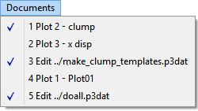

文档菜单

图 1：菜单列出所有打开的项。已勾选的项可见；未勾选的项隐藏。
此菜单上可能出现三种窗格类型（pane type）：编辑器、视图和列表。这些窗格容纳用户创建的项，这些项可能“来来去去”；相比之下，i 窗格（Panes）菜单上可用的窗格类型都是程序内置的组成部分。
该菜单完成三项任务：
- 列出程序中当前打开的所有项，
- 指示每个项的可见性状态（勾选 = 可见），以及
- 导航到从菜单中选中的项，并根据需要取消隐藏。
项关闭后，将从菜单上显示的项列表中移除。
注意
不能从此菜单关闭项。项旁边的复选框是可见性的指示器。选中已勾选的项不会“取消勾选”它（即不会“关闭”它），但会使程序将该窗格设为程序中的活动窗格。请使用窗格标题栏上的关闭按钮（  ）关闭窗格。
）关闭窗格。
| 这些内容对您有帮助吗？… 版权与免责声明 | FLAC3D © 2019, Itasca | 原文更新于 2020 年 10 月 8 日 |